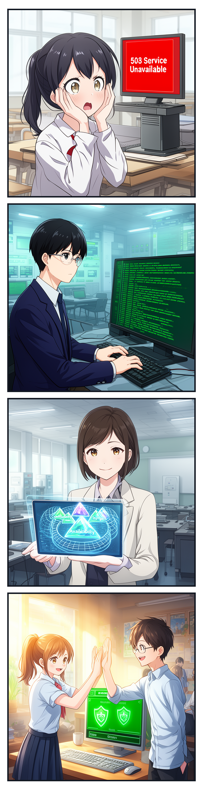
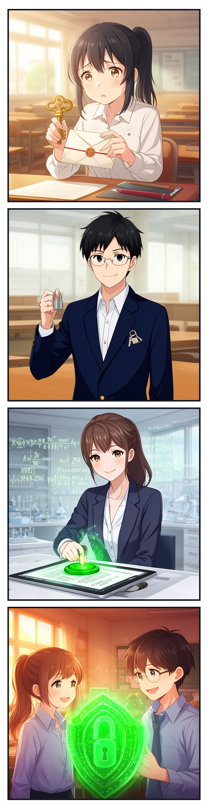
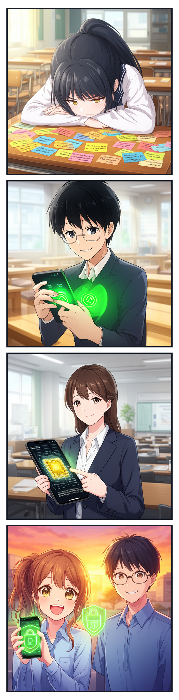
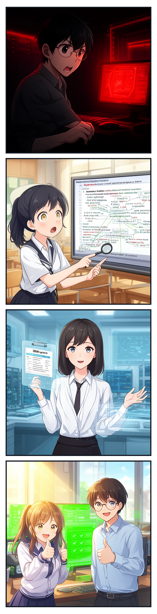
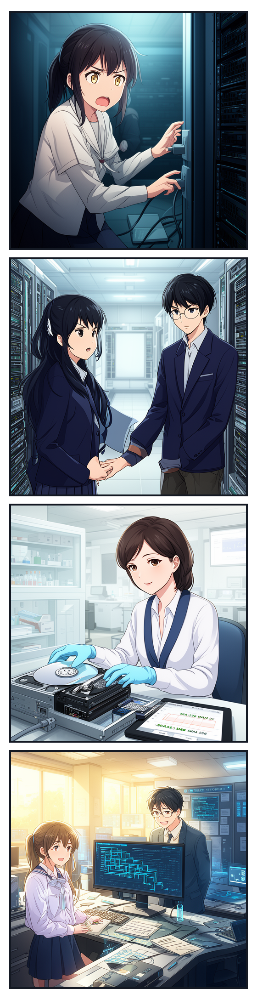
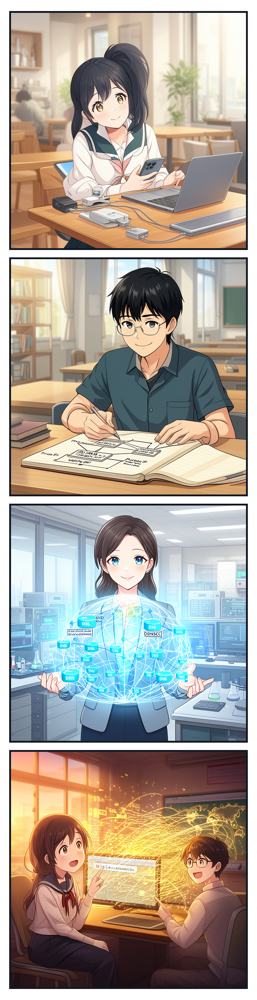
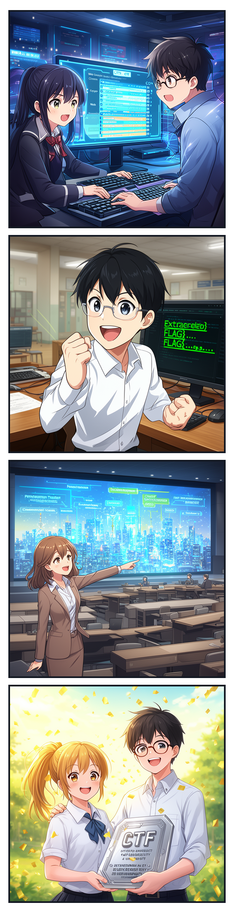
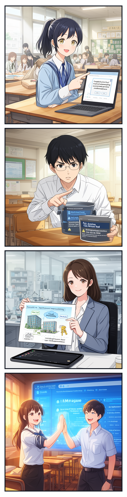
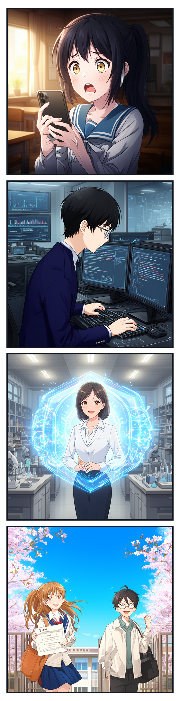

📖 このライブラリについて
高校生がサイバーセキュリティの面白さや重要性に触れ、将来の情報科学系・工学系大学への進学やセキュリティ専門職を目指すための入門ライトノベルです。
男子高校生（城崎 悠真 部長）と女子高校生（橘 葵）が、国内外の最新サイバー脅威ニュースや政府機関（デジタル庁・国家サイバー統括室・米CISA等）の公式情報を題材に、大学の芹沢 涼香 准教授と共にセキュリティの仕組みを優しく・正確に探求していきます。
📑 収録エピソード一覧（第1部 全15話）

秘密の合言葉と見えない壁 〜パスワード認証と多要素認証の仕組み〜
学習テーマ: 認証の3要素（知識・所持・生体）、多要素認証（MFA）、アカウントリスト攻撃
小説と図解を読む →
偽りの手紙と本物の目印 〜フィッシング詐欺の見抜き方とURLの秘密〜
学習テーマ: スミッシング、ソーシャルエンジニアリング、URL階層構造、電子証明書（HTTPS）の真実
小説と図解を読む →街角の電波は誰のもの？ 〜公衆無線LANの危険性と通信の暗号化（HTTPS）〜
学習テーマ: フリーWi-Fi、盗聴と中間者攻撃（MitM）、TLS暗号化トンネル、VPN
小説と図解を読む →
忍び寄るトロイの木馬 〜マルウェアの種類とソフトウェア更新の真実〜
学習テーマ: マルウェア4分類（ウイルス・ワーム・トロイ・ランサムウェア）、脆弱性とパッチ適用
小説と図解を読む →
三つの宝玉を守る城壁 〜情報セキュリティの3大要素（CIA）と多層防御〜
学習テーマ: CIA（機密性・完全性・可用性）、DDoS攻撃、多層防御の同心円モデル
小説と図解を読む →
データベースの合言葉と呪文の罠 〜SQLインジェクションと安全なプログラミング〜
学習テーマ: SQLインジェクション攻撃、文字列連結の脆弱性、プレースホルダ（バインド機構）
小説と図解を読む →
割れない南京錠と魔法の印鑑 〜公開鍵暗号とデジタル署名の数理〜
学習テーマ: 鍵配送問題、公開鍵暗号の鍵ペア、デジタル署名（電子署名）、SHA-256ハッシュ関数
小説と図解を読む →
パスワードを捨てる日 〜生体認証とパスキー（FIDO2）が拓く未来〜
学習テーマ: パスキー（Passkey）、FIDO2 / WebAuthn、公開鍵認証、Secure Enclave、パスワードレス認証
小説と図解を読む →
見えない鎖の綻び 〜サプライチェーン攻撃とソフトウェアの原材料表示（SBOM）〜
学習テーマ: サプライチェーン攻撃、委託先経由侵入、オープンソース汚染、SBOM（ソフトウェア部品構成表）
小説と図解を読む →
ゼロの日を越える翼 〜ゼロデイ脆弱性と世界を守るホワイトハッカー〜
学習テーマ: ゼロデイ攻撃（0-day）、協調的脆弱性開示（CVD）、CVE番号、米CISA KEVカタログ、倫理的ハッカー
小説と図解を読む →
砂浜の足跡と電子の鑑識官 〜デジタル・フォレンジックと不正アクセス禁止法〜
学習テーマ: デジタル・フォレンジック、ライトブロッカー、ハッシュ値照合、不正アクセス禁止法、サイバー警察・CSIRT
小説と図解を読む →
世界を繋ぐバケツリレー 〜家庭・学校のLAN、ルーターとDNSの秘密〜
学習テーマ: LANとWAN、プライベートIPとグローバルIP、ルーター（NAT/NAPT）、DNS名前解決、初期ファイアウォール
小説と図解を読む →
旗を掲げる守護者たち 〜サイバーセキュリティ競技（CTF）と未来への扉〜
学習テーマ: CTF（Capture The Flag）競技、5大ジャンル（Web, Crypto, Reversing, Forensics, Pwn）、大学情報学部進路、CISO
小説と図解を読む →
見えない空の保管庫 〜クラウドセキュリティと責任共有モデル〜
学習テーマ: クラウドサービス（IaaS/PaaS/SaaS）、責任共有モデル、IAM最小権限の原則、公開バケット設定ミス防止
小説と図解を読む →
知性をまとう盾と矛 〜人工知能（AI）の悪用脅威と防衛の未来（第1部 完結）〜
学習テーマ: AI時代の脅威（プロンプト注入・ディープフェイク・データ汚染） vs AI自律防御、人間の倫理と知性、第1部堂々完結
小説と図解を読む →